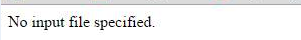

Sorun Giderme
Bazı sunucularda URL yönlendirmelerde index.php yerine index.php? şeklinde kullanım isteyebilir. Ayrıca bazı sunucularda aşağıdaki görsele benzer(No input file specified) sayfa hataları ile karşılaşabilirsiniz. Bu durumda .htaccess dosyası içerisindeki index.php ifadesini index.php? şeklinde değiştirmeniz gerekmektedir. Bu değişikliği doğrudan .htaccess dosyasından yapmak yerine aşağıdaki şekilde yapılması tercih edilmelidir.

Config/Uri.php
Yukarıdaki kodu aşağıdaki şekilde değiştirin: